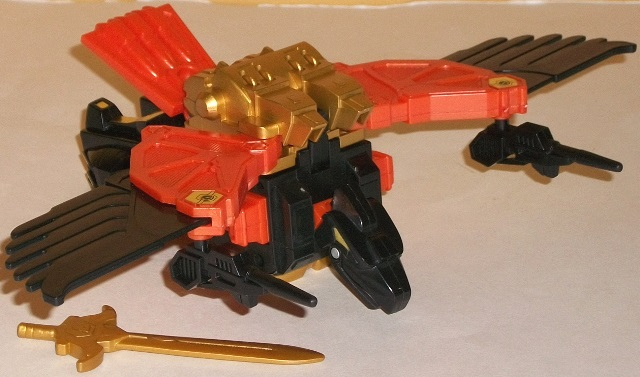 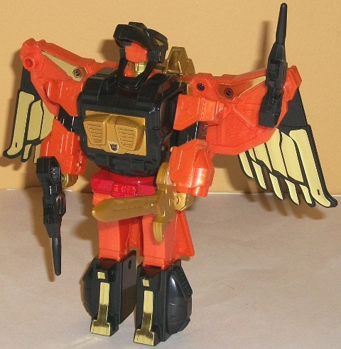
Difficulty of Transformation : Easy
Color Scheme : Black, milky orange, metallic gold, and some red and light pale metallic green
Individual Rating : 7.1
Allegiances
: Decepticons
Set Price
: $120 (U.S.)
Difficulty of Sticker Application
:
N/A
A quick note before I
got started on the reviews proper for these guys-- these are indeed reissues
of the original Generation One toys, but since I didn't review (or have)
the original G1 toys, following are full reviews of these toys. However,
these reviews keep in mind that the set was released in 2013, and thus
are judged in comparison to the other "modern" toys that one could have
put one's funds towards at the time, as opposed to the G1 toys that were
on the shelves when these molds were first released. If compared to other
G1 toys, these would probably score a bit higher than my scores here. Also,
the stickers are pre-applied on "Platinum Edition" Predaking. It should
also be noted that the molds seem to have degraded a bit since their initial
release, as there have been fairly numerous-- and varied-- QC issues with
this set, though few of them seem serious.
 Divebomb
Divebomb
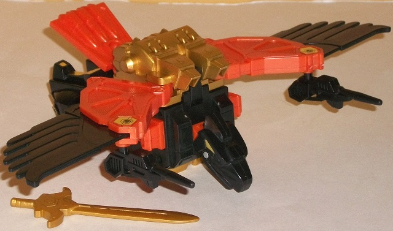
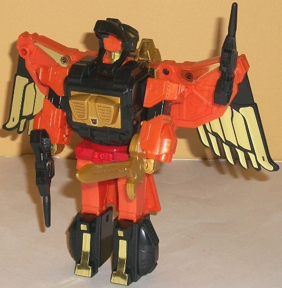
Difficulty of Transformation
: Easy
Color Scheme
: Black, milky orange,
metallic gold, and some red and light pale metallic green
Individual Rating
: 7.1
Divebomb's the most unique
Predacon out of the set, given that he's the only one who's a flier, and
he doesn't have four legs to boot. Put on his stomach in a "flying" position,
Divebomb's beast mode doesn't look all that bad-- his wingspan is pretty
impressive, and although the mold detailing isn't all that great by modern
standards, by G1 standards it gets a bit intricate on some parts like the
tailfeather piece and the "middle" wings. The bird head also looks pretty
nice, and for a G1 figure (particularly in beast mode), he has a decent
amount of articulation here-- his head and jaw can move up and down, his
wings can move up and down at two points (but not forwards or backwards),
and his bird legs can move forward slightly at the hips, plus he can also
rotate at the waist, his tailfin piece is on a hinge, and his toes are
able to move downwards a bit. The black, gold, and orange color scheme
with a bit of red goes together quite well, with the gold looking particularly
nice on Divebomb's jet backpack and feather stickers. It certainly fits
a (robotic) condor. Where Divebomb really looks rather bad is when looking
at the bulk of his main body that ISN'T his wings or head, or if you were
to stand him up on his bird legs-- it's very, VERY obviously his robot
mode compressed up. His legs are particularly weak, being simply his bulky
robot legs folded up against themselves and not looking like proper bird
legs in the least. Like most of the other Predacons, Divebomb has two guns
that can peg into his wings in this mode or fists in robot mode, and he
also comes with a gold sword that can only store easily in a fist in robot
mode.
Divebomb's robot mode
transformation is rather straightforward-- as can be ascertained from his
beast mode, his arms and legs simply unfold from the main body and his
robot head pokes out from inside his bird mouth. Some TFs have managed
to pull off this look for their heads well, but Divebomb sadly isn't one
of them. His head is quite flat, and his jaw is at such an angle where
it covers up his head a bit too much from most angles (particularly his
lower head), and at a side view you can see gaps in between the two heads.
He still wears his bird mode as essentially a backpack in this mode, but
it honestly still looks good-- the feathers frame his form nicely, and
the tailfeather piece stays out of the way of movement. Proportionally,
his chest is a bit big and his arms a bit small (he also looks a bit fat
from a side view), but it's nothing too bad, particularly for a G1 toy.
His articulation is still above-average for a G1 toy, consisting of back-and-forth
movement at the shoulders, hips, knees, rotation at the waist, and the
same wing articulation that he has in beast mode. In case you're curious,
Divebomb's diecast parts are his waist and the gold section in the middle
of his chest. His Decepticon rub symbol is on the underside of his tailfeather
piece.
Forms the back and left
arm of Predaking.
 Headstrong
Headstrong
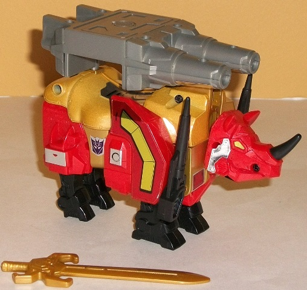
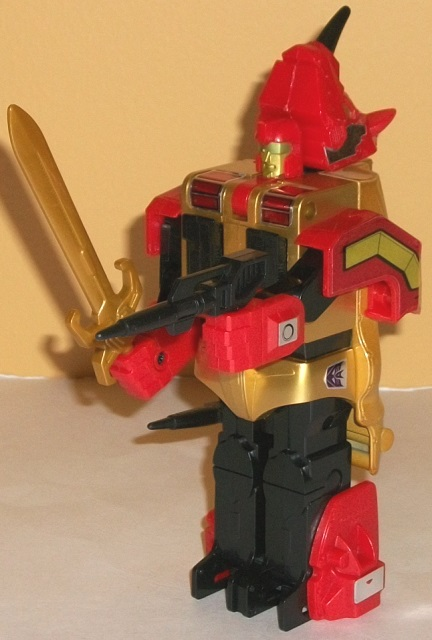
Difficulty of Transformation
: Easy
Color Scheme
: Metallic gold, glittery
red, black, moderately light milky gray, and some silver and light pale
metallic green
Individual Rating
: 6.0
Headstrong's rhino mode
is pretty, well... strong, in terms of looks. He's a beefy block o' plastic,
as mechanical rhinos should be. His proportions are mostly okay (giving
some leeway for the fact that he's not supposed to be a "real" rhino),
but what irks me are that his front rhino legs actually are in the middle
of his stomach (they slide out from his robot chest), as opposed to the
sides, and look odd from a front or diagonal view because of this. His
robot head piece also sticks out slightly from underneath his rhino chest,
but that's a relatively minor quibble. Headstrong's color scheme of gold,
red, and black makes him fit in well with the other Predacons, but it doesn't
fit a rhino very well, particularly compared to how well the colors fit
his teammates. His mold detailing is a bit sparse even by G1 standards,
with the rhino legs and head having a fair amount of detailing, but many
pieces-- including his back-- having very minimal detailing beyond a few
"rivets". As for articulation, Headstrong's pretty weak in this mode--
his rhino head is the sole bright spot, being on a pivot near the bottom
of the head that can let him look in every direction except up. He also
can kick backwards with his back legs (at the hip), but that's it in this
mode. For weaponry, Headstrong comes with the usual pair of blasters and
a sword, though they can't be stored easily in this mode. The foot piece
for Predaking can be mounted on top of his back like a bit two-barreled
cannon, though, which is a pretty creative use of gestalt bits. Headstrong
has a pretty good amount of diecast-- his entire upper back piece is made
of metal, giving him quite a lot of weight and heft. His Decepticon allegiance
rub symbol is on top of his back, near where the head meets the main body.
Headstrong has a robot
mode that's rather typical of G1 robot modes-- that is, it has some pretty
odd proprtions at parts, and looks overly stiff with a giant uni-leg despite
being large enough to easily be able to have two separate, articulated
legs. His hands fold out from his front shoulders, but they can only move
back-and-forth at the shoulders and elbows (at two points)-- other than
this, Headstrong doesn't have a smidgen of articulation in this mode. I
wish you could rotate his shoulders up and forward a bit, too-- they're
a little low as-is. His legs have basically no feet either, and rely on
a small fold-out tab hidden in his uni-leg to keep him from toppling over
due to the sheer weight of the diecast on his back. His chest is a bit
too tall/long, but otherwise proportionally he's okay. His head sculpt
is decent enough (if entirely unremarkable), but I'm not a huge fan of
the rhino head just sitting behind his robot head here. I wish it either
folded away or integrated into his robot head piece a bit better. The good
news is, unlike most of the other Predacons, from a side view Headstrong
doesn't look too chunky.
Forms the left lower
leg of Predaking.
 Rampage
Rampage
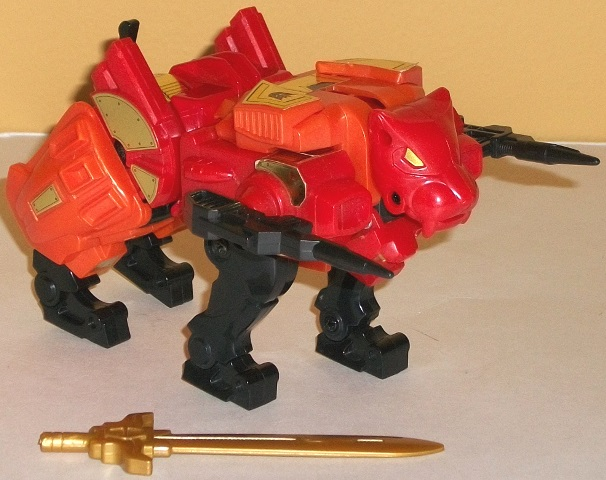
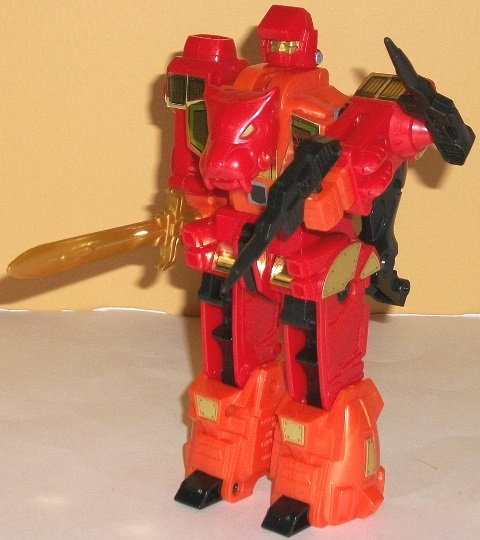
Difficulty of Transformation
: Easy
Color Scheme
: Red, milky orange,
black, and some metallic gold and light pale metallic green
Individual Rating
: 7.3
Rampage's alternate mode
is a robotic tiger, and the Predacons' red/orange/black fits him quite
well, though painted (or stickering) some stripes on him might have made
him more immediately recognizable as a tiger instead of just some kind
of big cat. This is primarily because Rampage is a bit bulky for a cat,
particularly in the hind quarters and legs, which are way too chunky. His
tail stub is also laughingly small. His mold detailing is additionally
a bit sparse even by G1 standards, though a few areas-- like his legs and
tiger head-- have some nice molded-in mechanical detail. There is one rather
obvious robot mode extra here, and that's his robot head, painfully sticking
out right underneath his tiger head (face first, naturally), which is a
bit distracting. As for articulation, Rampage's is quite decent for a G1
toy-- he can move his head 360 degrees, and he can also move back-and-forth
on all four knees, at his hips, and at each foot. His tail can also move
back-and-forth slightly, though this is more a function of being part of
the transformation than anything else. Like the other Predacons, Rampage
comes with two handheld guns and a sword, the former of which can store
nicely in his shoulders in this mode but not the latter. His diecast metal
is in his waist, and his Decepticon allegiance rub symbol is on his back
right above said waist.
In robot mode, Rampage
still keeps fairly decent proportions for a TF toy from his time, with
a couple of exceptions. His arms are a bit too short, and have no visible
elbows-- however, the biggest offender is definitely if you look at him
from a side angle. Here, he looks way too chunky, and his head's too flat.
Plus, you have his front tiger legs just hanging behind his body, and not
in a way that complements his form either. His lower legs could stand to
be a bit larger as well, but that's relatively minor. The tiger head on
his chest was a nice aesthetic choice and fits right in with its surrounding
parts, and I love the way his rear tiger legs fold right into his robot
legs. As for articulation, again Rampage pulls ahead of the G1 pack; he
can move back-and-forth at the shoulders, hips, and slightly at each toe
(and each leg can move independently as well, thank goodness).
Forms the right arm
of Predaking.
 Razorclaw
Razorclaw
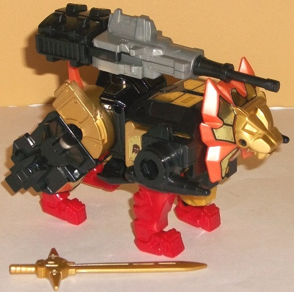
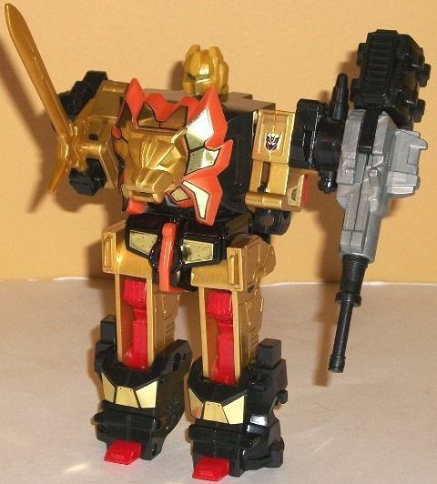
Difficulty of Transformation
: Easy
Color Scheme
: Black, metallic gold,
red, and some milky orange, silver, and moderately light milky gray
Individual Rating
: 4.9
Razorclaw--being the
biggest and the leader of the group--is, fittingly enough, the king of
the jungle. His lion mode should admittedly be bulky, but even considering
the allowances made for a mecha-lion compared to the original, Razorclaw
is too bulky, especially with his rear legs, which are just absurd above
the knee. The codpiece for the combined mode also sticks out below the
belly a bit too much, making Razorclaw look even fatter. His little tailpiece
is also ludicrously small, and there's one rather obvious robot mode extra
in this mode-- his robot head, which sticks out from the chest just below
his lion head. As for movement, in this mode his head can rotate 360 degrees,
he can move back-and-forth at least slighlty on all four knees, at each
foot, and slightly at the base of his tail, though that's mostly because
of his transformation. (Is this review sounding familiar so far? This is
because Razorclaw shares an almost identical transformation-- and general
design-- with his subordinate Rampage.) With black being more predominant
in Razorclaw's color scheme compared to his subordinates', this allows
him to form a nice torso that "anchors" all the colors around a nice, relatively
color-neutral area, as well as making him a bit more unique color-wise.
The red, gold, and orange bits do all contrast nicely against the black,
however. His mold detailing is very sparse on some points-- like his back--
but fairly detailed for a G1 toy in other areas, like the legs. All of
his gold stickers help to give some more detailing around the figure, though,
particularly on the lion head, which looks marvelous with all those gold
"riveted plates" on the sides of the head with the mane flaming orange
behind them. Razorclaw also has two (non-working) rocket launchers on the
front sides of his body, which help (at least partially) to hide the combiner
sockets right there. Given those weapons, Razorclaw doesn't come with his
own regular handheld guns, but he does come with a sword (not storable
in this mode, as usual) and a pretty cool large gun. By sliding the two
black halves on the gun back and forth and rotating it around, you can
either give it a long single barrel or a thicker double barrel, which is
a pretty nice little touch. Razorclaw's diecast metal is in his waist,
and his Decepticon allegiance rub symbol is on his back, right above the
waist.
Razorclaw's robot mode
is... is... bwahaHAHAAAAA! I'm sorry, it's hard to look at this toy in
this mode with a straight face. This figure encapsulates nearly everything
bad prportionally about so many of the G1 toys (with the exception of the
uni-leg, which this figure thankfully does not have). His chest is way
too large and blocky; his legs are far too chubby from a side view and
the lower legs are too small in comparison to the upper; and, worst of
all, his arms are just flat out RIDICULOUS. Cut off your arms at the elbow
and then glue your hands on said elbows; that's what Razorclaw's arms look
like. They can't even reach out in front of his chest facing straightforward.
Rarely do I think one sole feature ruins a toy by itself, but Razorclaw's
robot arms pretty much do that for the toy. They're just so utterly ludicrous-looking.
On a lesser (but still annoying) note, his front lion legs hang off his
backside, but don't fold up straight against his body like Rampage's; instead
they can only fold down slightly, the large combiner codpiece on his butt
preventing them from fully folding down. On the plus side, his head sculpt
is pretty well-done (though I wish his visor was a color that looked more
differentiated from his gold plastic), and his articulation is decent for
a G1 figure; he can move back-and-forth at the shoulders, hips, knees,
and slightly at the feet (with each leg able to move independently of the
other). His large gun unfortunately can't be held by his hands in this
mode, but it can be stuck in one of his shoulder sockets.
Forms the torso and
upper legs of Predaking.
 Tantrum
Tantrum
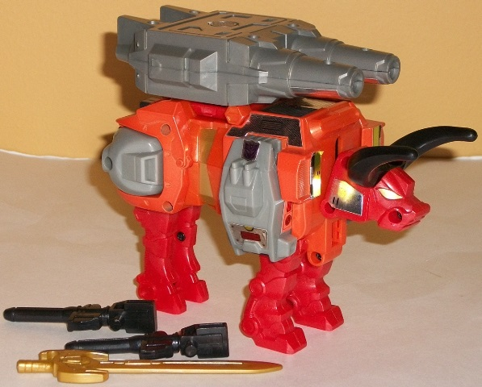
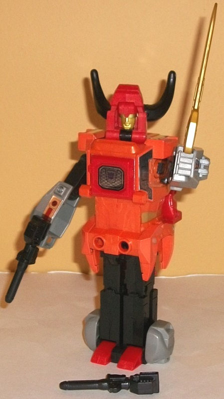
Difficulty of Transformation
: Easy
Color Scheme
: Red, milky orange,
moderately light milky gray, black, and some light pale metallic green
and metallic gold
Individual Rating
: 4.5
Tantrum's alt mode is
a robotic bull, and in beast mode his proportions are quite good, especially
considering the whole "mechanical" aspect to it all. His stomach doesn't
hang too low to the ground, and his legs seem of a roughly appropriate
length-- like his fellow leg-bot Headstrong he doesn't have a tail, but
that's a small quibble since it probably would've been too small had they
included it anyways. The fiery orange and red combo works really well on
a bull, and the light milky gray, while not exciting, provides a decent
neutral color for the others to play off of. His mold detailing is average
for a Predacon, with it being rather simple in most places but detailed
in a few others, like the legs for instance. Like with Headstrong, the
Predaking foot-piece can be mounted on Tantrum's back to form a big double-barreled
cannon, though Tantrum also comes with two regular handheld guns and a
sword that isn't storable in this mode, just like most of his teammates.
For articulation in this mode, Tantrum can move his head 360 degrees, and
his front legs can move backwards at the hips-- that's it, though. No knee
or toe articulation on any leg, and his rear legs can't move at all. About
half of Tantrum's main body is diecast metal, and his Decepticon allegiance
rub insignia is right in the middle of his back in this mode.
Tantrum's robot mode,
on the other hand, is definitely... something. His main body doesn't really
have any curves to it at all, and his whole entire body and legs look roughly
like one long extension of the same part (this isn't helped by the fact
that Tantrum has a "uni-leg" with both legs stuck together, something that
really should not have happened on a figure of this size). His chest is
almost non-existent and the same width as his stomach thereabouts, and
his head is hidden really awkwardly inside his bull head. This is because
his head is a bit above the chest because of the odd placement of the joint
and back of the bull head beneath it, and the horns come off the back side
of the head at a rather awkward angle. His shoulders are also a bit too
far down and noticeably more skinny than the other Predacons', making him
look even more stick-ish. Additionally, his front two bull legs just kind
of hang off his back, but they don't get in the way of movement and are
definitely minor compared to his other problems. For articulation, he can
rotate at the neck, and he has two points of articlulation at the shoulders
and inwards motion at the elbows. So although I'm grateful that his shoulders
can turn in more than one direction, otherwise he's a bit of a brick.
Forms the right leg
of Predaking.
 Predaking
(Combined Form)
Predaking
(Combined Form)
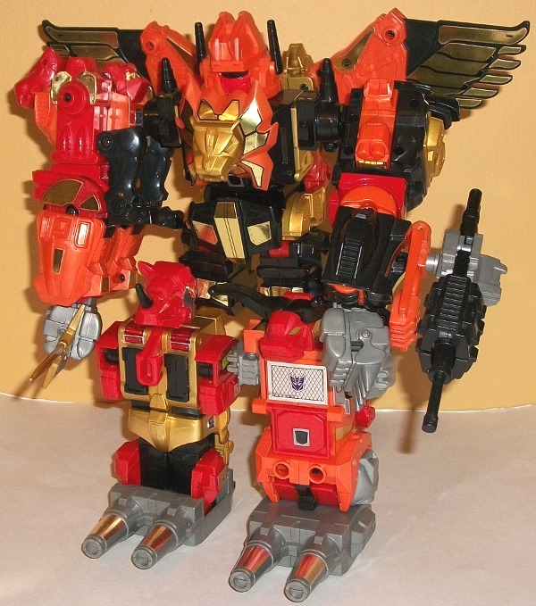
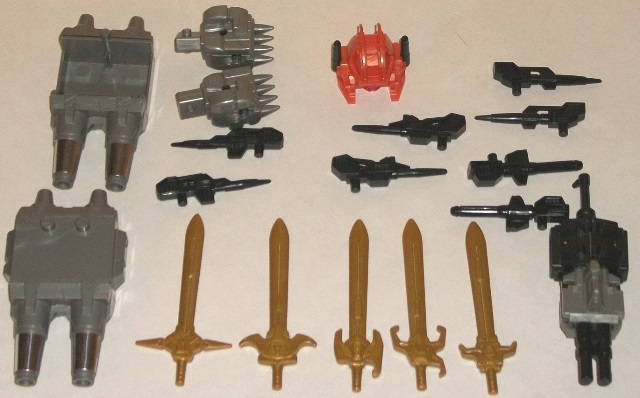
Difficulty of Transformation
: Hard
Color Scheme
: Black, milky orange,
red, metallic gold, and some light pale metallic green and moderately light
milky gray
Individual Rating
: 6.8
In his colossal combined
form, Predaking forms the largest of the G1 combiner sets, and due to all
the diecast in him, has quite a lot of heft, as well. It's also important
to note at this point that, unlike most G1 combiner sets, Predaking is
not "Scramble City"-- that is, his limb robots more or less have to form
the limbs they're assigned to be. (Divebomb and Rampage can switch places
as arms if you so wish, but that's it.) All of Predaking's colors work
very coherently as a team, with no one color dominating too much and the
red, orange, gold, and black generally working together pretty well. Even
for his size, though, Predaking's limbs are rather bulky as a side effect
of having the "main" member not being so much larger than the limb bots.
This is particuarly noticeable in the lower legs, where Headstrong and
Tantrum are so thick that they have to be "off-center" from the upper legs
in order to fit! This doesn't look too great, and again the arms are a
bit TOO beefy/long, but otherwise Predaking looks quite imposing. I particularly
love how Divebomb's wings detach and frame the back of this mode to give
it a nice, unique silouhette. (The connection point for the wings to the
upper back is tenuous at best, though, and design-wise definitely the weak
point of this combiner when it comes to tolerances-- his arm connections
FEEL a bit loose, but they stay in there pretty well.) Predaking's head
piece that slides over Razorclaw's head is honestly a bit nondescript,
having a faceplate and a singular visor-- I would've preferred something
a bit more "feral", myself. For articulation, Predaking can move at the
shoulders (at two points), elbows (at two points-- provided you move Rampage's
tiger legs out of the way on his arm, as they can get in the way of the
waist articulation on the limb-bot that becomes the elbow articulation
here. He can also rotate at the waist and the wrists, and Divebomb's wing
articulation is all intact on Predaking's back. So, although he's still
quite a brick, for a G1 combiner he's not so much a brick as the others,
who mostly just have shoulder articulation and that's it. As can also be
seen from the above picture, Predaking comes with a TON of extra pieces
and accessories, and it's next to impossible to fit them all on this mode
at once-- particularly since this version comes with a gold-redecoed Beast
Hunters Optimus Prime sword, which gives him yet something else to have
to plug in somewhere. Best to have a plastic baggie handy for all of Predaking's
extra parts-- something I really don't like, but was unfortunately part
and parcel for the vast majority of the G1 toys.
The G1 Predaking reissue
set might not be up to modern articulation and proportions standards, but
it's a huge, solid, weighty combiner-- and in a time when modern toys are
getting lighter, smaller, and more hollow, that's definitely worth something.
However, it's also a fairly expensive set, and as such is likely only going
to appeal to "old skool" collectors. Fans who grew up with "Beast Wars-era
and later" articulation are likely going to want to look elsewhere, but
fans of G1 and/or combiners may want to pick up this set, particularly
if it's on a bit of a discount. Individually Rampage is probably my favorite
toy overall followed closely by Divebomb, while Tantrum is definitely my
least favorite primarily due to his utterly ridiculous look in robot mode.
Reviews by Beastbot
(NOTE: Pictures above are actually of the 2010 Japanese reissue of the set and not the 2013 Hasbro reissue, though other than the addition of a gold-painted Beast Hunters Optimus Prime sword included with this set and the stickers being already applied, there's no difference between the two releases.)